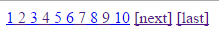

Pagination(Sayfalama) Kütüphanesi
Sayfalama işlemlerini yapmak için oluşturulmuştur .
| Pagination(Sayfalama) Kütüphanesi ve Yöntemleri | |
|---|---|
| DB::pagination() Kullanımı ile Daha Pratik Sayfalama Yapmak | |
| Ajax ile Sayfalama Yapmak |
Sayfalama Kütüphanesi Yöntemleri
Sayfalama kütüphanesine ait yöntemler aşağıdaki tabloda listelenmiştir. Kod üzerinden sayfalama ayarlarını yapılandırabileceğiniz gibi Config/Components.php ayar dosyasından da yapılandırmaları gerçekleştirebilirsiniz.
| Sayfalama Oluşturma Yöntemleri | Anlamları |
|---|---|
| Sayfalamanın kullanılacağı URL adresi. | |
| Kaçıncı kayıttan listelenmeye başlayacağı. | |
| Tek bir sayfada olması istenilen kayıt sayısı. | |
| Toplam kayıt sayısı. | |
| Sayfalamada yer alacak link sayısı. | |
| Ajax işlemleri ile sayfalama yapılabilmesi için kullanılır. Linkler # işaretine dönüştürülür. | |
| Sayfalamada yer alacak linklerin isimleri. | |
| Limit, totalRows gibi sayfalama özelliklerinin hepsini dizi tipinde bu yöntem ile belirtebilirsiniz. | |
| Sayfalama nesnelerine stil eklemek için kullanılır. | |
| Sayfalama nesnelerine css sinifi eklemek için kullanılır. | |
| Sayfalama oluşturma yöntemidir. İsteğe bağlı 4 parametresi vardır. |
Yukarıdaki yöntemlerin kullanımına yönelik örnekler aşağıda verilmiştir.
Pagination::url('urunler/sayfa' ) ->limit(10 ) ->totalRows(200 ) ->start(0 ) ->style(array ('current' =>'color:blue' ,'font-size' =>'11px' )) ->create();

Yukarıda kodların çıktısı olan sayfalama nesnesi görüntüsü yer almaktadır.
| Sınıf ve Stil Uygulanabilir Anahtar Kelimeler | Etkilenen Kısımlar |
|---|---|
| current | Aktif sayfayı görteren linke stil veya sınıf eklenmesi için kullanılır. |
| prev | Önceki butonunu görteren linke stil veya sınıf eklenmesi için kullanılır. |
| next | Sonraki butonunu görteren linke stil veya sınıf eklenmesi için kullanılır. |
| first | İlk butonunu görteren linke stil veya sınıf eklenmesi için kullanılır. |
| last | Son butonunu görteren linke stil veya sınıf eklenmesi için kullanılır. |
| links | Sayfalama oluşturulan linklere stil veya sınıf eklenmesi için kullanılır. |
DB::pagination() Kullanımı ile Daha Pratik Sayfalama Yapmak
Sorgulara göre daha pratik bir sayfalama yapmak için DB sınıfına ait sayfalama yöntemi mevcuttur. Bunun için Pagination sınıfının kullanımından yararlanılmıştır. İster Pagination sınıfına ayarları gönderin isterseniz doğrudan pagination yani sayfalama barını oluşturun. Yani veritabanı ile sayfalama sınıflarının entegrasyonu ile oluşturulmuş yöntemdir.
| 1. Parametre = string Url | Sayfalama linklerinin bağlantı kuracağı link bilgisi. |
|---|---|
| 2. Parametre = array Ayarlar | Sayfalama için gönderilecek gerekli ayarlar. Bu ayarların neler olduğu Pagination sınıfında zaten belirtilmiştir. Örnek: links, countLinks. |
| 3. Parametre = bool Çıktı true | Bu parametre false ayarlamadığı sürece sayfalama barını çıktılayacaktır. False olma durumunda sayfalama için gerekli ayarları döndürecektir. |
$pagination = DB::limit(URI::segment(-1 ),5 )->get('OrnekTablo' )->pagination();$pagination )
Ajax ile Sayfalama Yapmak
Sayfalama kütüphanesini ajaxlarla birlikte de kullanabilirsiniz. Bu işlemi için Config/Components.php ayar dosyasını, settings() ya da type(
| Özelikler | İşlevler |
|---|---|
| prow | Tip ajax olarak ayarlandıktan sonra sayfalama linklerinde prow="KayitNo" şeklinde bir özellik oluşur. |
| ptype | Tip ajax olarak ayarlandıktan sonra sayfalama linklerinde ptype="ajax" şeklinde bir özellik oluşur. |
Yukarıdaki veriler ajax işlemlerinde data göndermede ve tıklama gibi olayların kullanımında kullanılır.
// ajax ile gönderilen prow(kayıt numarası) verisi. $prow = ($prow = Method::post('prow' )) ?$prow :0 ;// products tablosundan veriler çekiliyor. $get = DB::limit($prow ,$limit )->orderBy('id' ,'DESC' )->get('products' );$table ='' ;// sizler bu bölümde sorgu sonucu verilerini tablolaştırabilirsiniz. // ben örnek olması açısından sadece alt alta ve koyu tonda yazdırıyorum. foreach ($get ->result()as $val ) {$table .= Html::bold($val ->id).Html::br(); }// sorgu sonucu ve sayfalama barı diziye aktarılıyor. $data ['table' ] =$table ;$data ['pagination' ] =$get ->pagination('' ,array ('start' =>$prow ));// veri json türünde çıktılanıyor. echo Json::encode($data );
Yukarıdaki gibi bir ajax sayfanız olduğunu varsayarsak gelen veriler yukarıdaki gibi kullanılıp geri gönderiliyor. Ajax success fonksiyonunuzda gelen data.pagination ve data.table şeklinde ilgili html nesnelerinin .html() özellikleri kullanılarak verilerin kullanımı sağlanır.